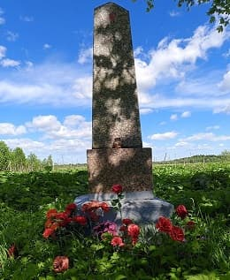

Забытый обелиск.
В деревне Аракюля Волосовского района есть удивительный памятник, поросший бурьяном. Венчает стелу красная звезда, не потерявшая краски.
Надпись на памятнике:
Председ. ком-та бедноты -
Ян Отсинг,
зам. пред. комбеда -
Юхан Инзельберг,
работник
комбеда Иван Кельдер,
его сын красноармеец
Антон Кельдер,
жена
пред. комбеда -
Мария Отсинг,
ее сестра - Лиза
Адамсон."
-------------------------------
(Пунктуация и орфография соблюдены оригинальные).
Можно предположить, памятник был установлен очень давно, возможно в двадцатые, поскольку указаны конкретные имена. Дата события совпадает с наступлением Юденича на Петроград в 1919 году. Волосовский район , как и весь югозапад, оказался в гуще событий. Слышал рассказ очевидца, как белые привели двоих братьев из их деревни (дело было в Губаницах) на кладбище, предложили выкопать себе могилы, что те и сделали. Расстреляли и закопали.
Удивляет убогий текст эпитафии, поскольку сама стела не смотрится самоделкой. Памятник из гранита (в районе гранитов нет), должен не мало стоить. Кто мог позволить такие затраты в те голодные годы?! Первый памятник Ленину был установлен в Ленинграде в 1926 году, деньги собирались всем Невским заводом, а тут такая роскошь, в деревенском поле, в медвежьем углу, вдали от дорог.
Благодарные потомки и последователи цветов к памятнику не возлагают. Даже трава рядом с ним не смята. Заросла народная тропа.
Еще раз, удивлен. У нас, в относительно сытые годы, на памятники реальным героям средств нет, а тут в голодные нашлись.
И вот получил отклик, пишет Людмила Геннадьевна Буткевич, внучка Яна и Марии Отсинг. О факте расстрела ей было известно, но подробностями казни и обстоятельствами установки памятника она не располагает. Достоверно, что у Яна и Марии осталось пятеро сирот возрастом от двух до 15 лет. Дети выжили. Их приняли соседские эстонские семьи. Позднее, старшие создали собственные семьи и забрали младших к себе.
Жизнь детей сложилась успешно. Все получили высшее образование.